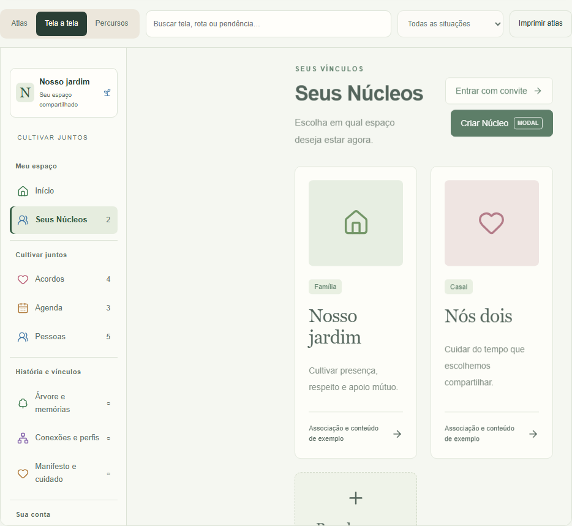
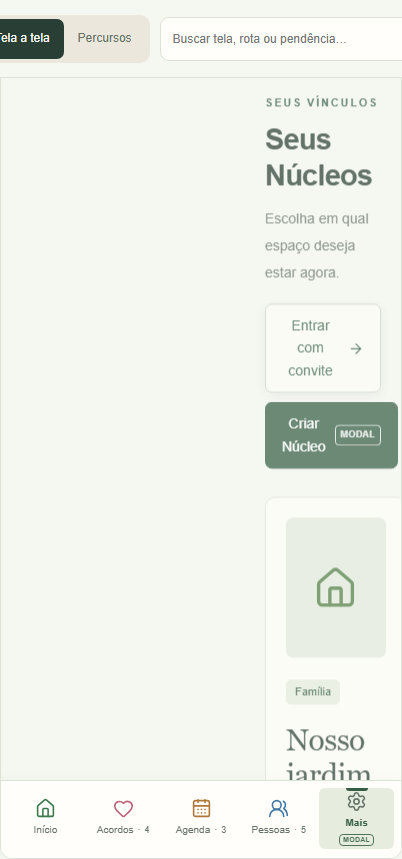
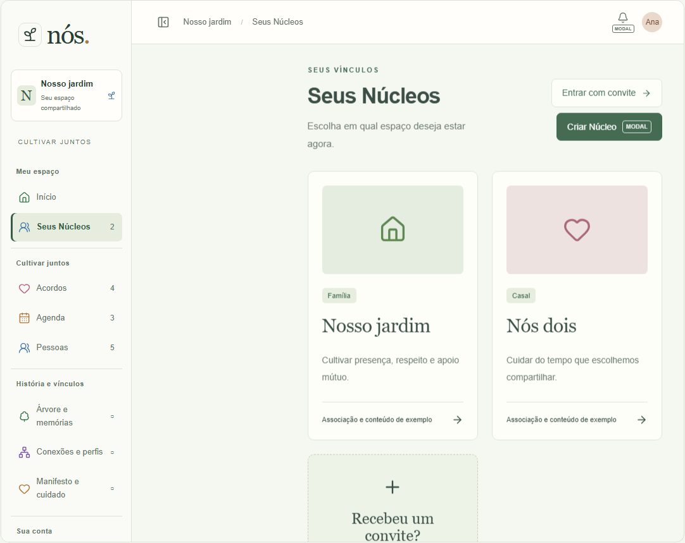
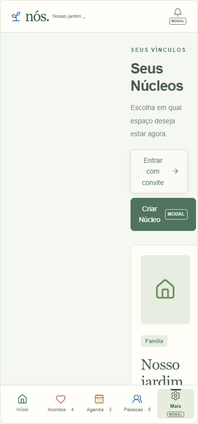
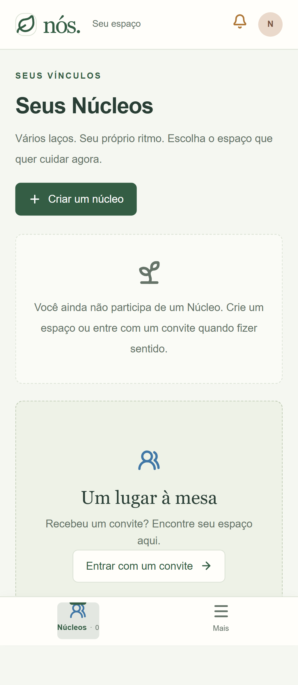

depois-app-desktop

Painel lateral removido, cartões ocupam a largura disponível. Nenhum modal alterado. Atlas com dados ilustrativos; aplicativo com conta descartável no Supabase local. Captura anterior do aplicativo não realizada; antes preservado somente no Atlas. Desktop 1440px, celular 390px no aplicativo; Atlas nos modos desktop/mobile da ferramenta. As capturas anteriores do Atlas usaram viewport padrão 1280×720; posteriores 1440×1000.




